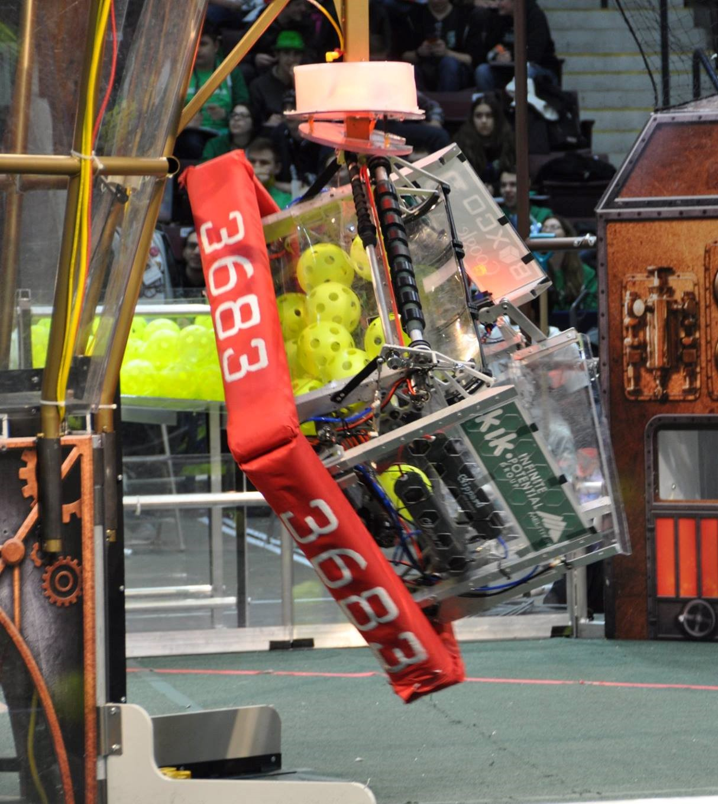
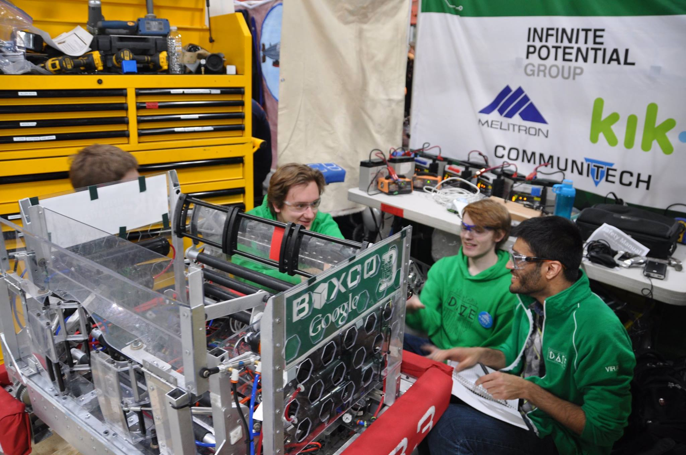
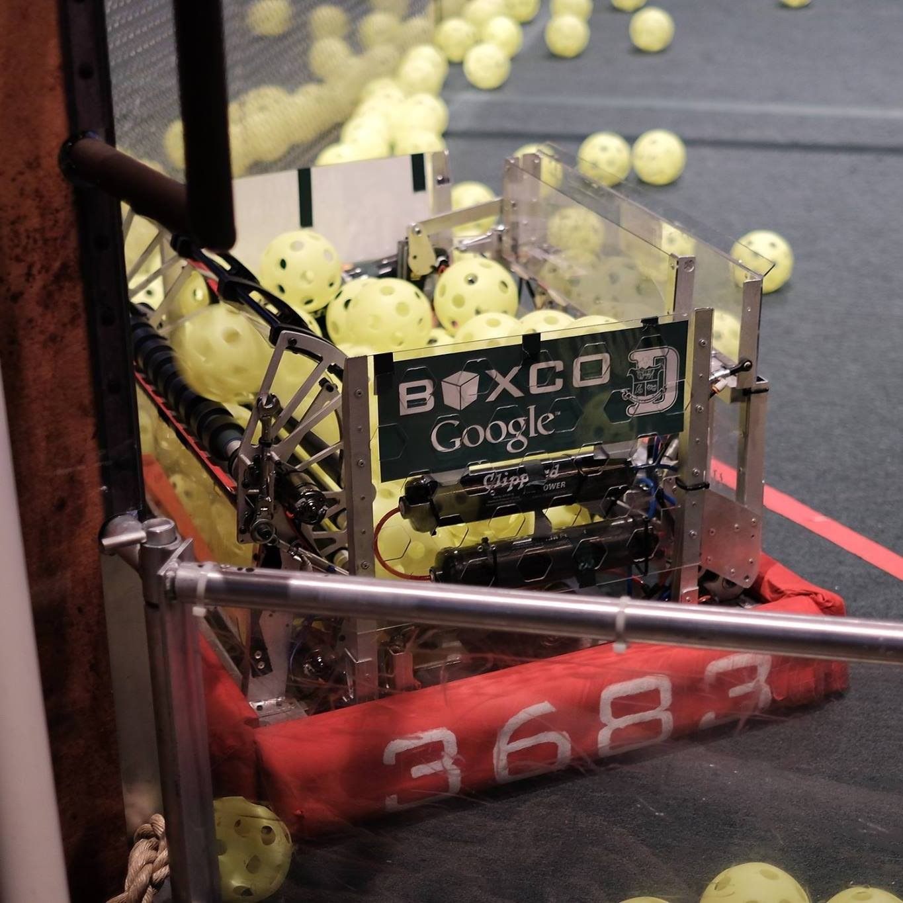
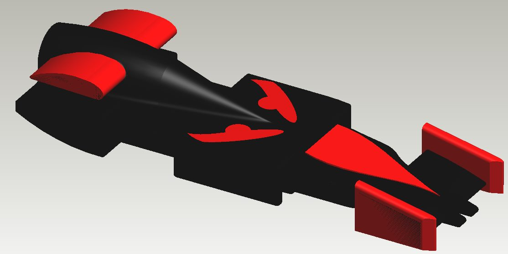
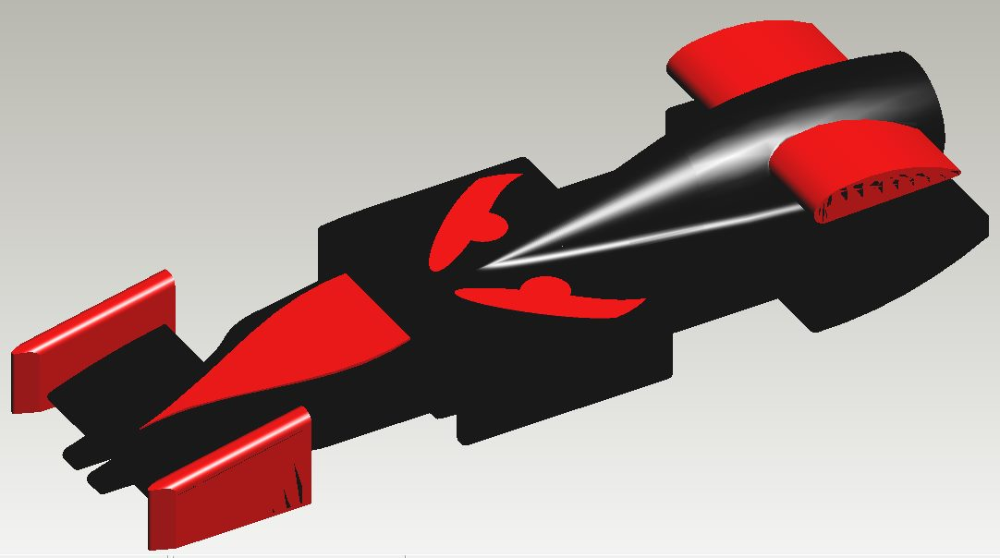
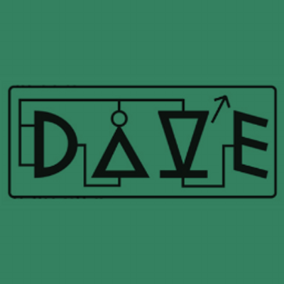
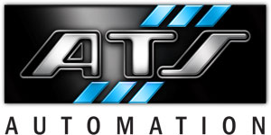
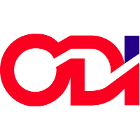
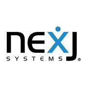
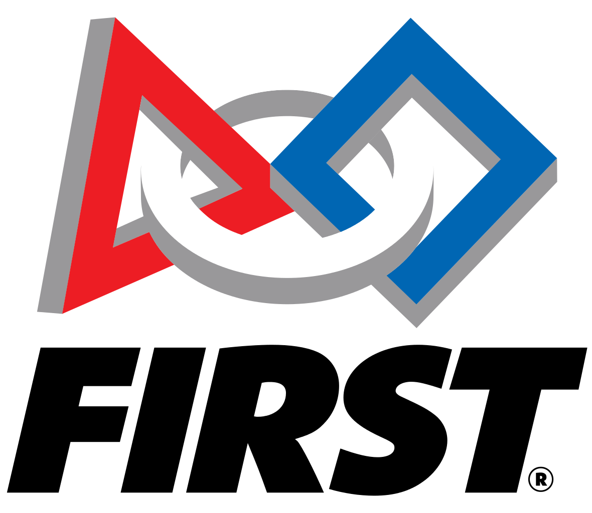

Projects
Attenborough | FRC Team 3683 STEAMworks Robot
- Winner of Tesla Division at FRC World Championship St Louis
- Capable of 9 & 18 ft/s, under 6s climb
- Control Systems Mentor - Software + Electrical
- automated gear ejection implemented with IR break beam sensors
- Motion Control - Encoders for distance and gyroscope for heading coupled with algorithm to follow a path mapped as a Bezier Curve



Synthesizer | SYDE 361 Course Project
- design instrumental interface for specific user persona
- design and construct electrical, mechanical, and software components of electrical synthesizer
Arduino Piano
- Arduino project
- 12-key piano that records a melody and plays it back
- multiple interrupts, multiple timers

Promptr, Back-end Developer
- UofTHacks2015 - 3 member team
- Micro Blogging app - prompts user to write in response to a topic
- Managed back end (data storage, retrieval, updating) with Parse, written in Javascript
- Skills learned:
- Parse - Cloud Code, Javascript SDK
- Backend - Data schema, JSON
- Teamwork
FRC Scouting System: Outpost
Latest Iteration:Outpost, Polymer Web app
- UI elements made using Polymer
- Built RESTful API with PHP/MySQL and the Slim Framework
- Skills learned:
- Polymer UI Design
- SQL & MySQL Workbench
- PHP, Slim Framework
- RESTful APIs


Previous Version: Java, Excel, MySQL, VBA
- 2 Java applications (master and slave) to gather data on FRC team performance at events
- Used SQL commands to populate MS Access database with informaton from the Java applications
Physics Simulator Android App, Project Manager
- SCRUM methodology
- time based physics simulation in Java
- Identified, by the instructor, as the most synergetic team
Brickbreaker
- Classic brickbreaker game made in Java
- Presented in year-end Woburn Game Showcase
- Skills learned:
- OOP - Object Oriented Programming
- file manipulation
- Graphics in Java
F1 in Schools, Team Leader & Designer
- Designed prototypes of a model F1 car using 3D CAD software (ProDesktop 8.0 by PTC)
- Documented design process and presented to class on large display board


Experience
Control Systems Lead Mentor | FRC Team 3683
Jan 2017 - now

- Winner of Tesla Division at FRC World Championship St Louis
- Lead and teach all aspects of FRC control system, including software (control theory) and electrical
- Designed mechanical and sensor based prototypes for automated mechanisms
- Testing and implementing motion control with different sensors and PID control loops
Control Systems Software Design Co-op | Automation Tooling Systems
Sept 2017 - Dec 2017

- Performed cell integration tasks (I/O checks, sensor and servo configuration, safety checks, troubleshooting) on syringe assembly line
- Troubleshooting cell logic using RSLogix PLC to ensure functionality
- Executed validation tasks (FAT) ahead of schedule with team of validation engineers
Controls and Automation Software Developer | Ontario Die International
Jan - April 2017

- Independently led stamping automation project through design, implementation, and testing on machines and users
- Worked under engineers on steel bending machinery with sensors and PLCs
Embedded Software Engineer | Curtiss-Wright Defense Solutions
May - August 2016
- Worked with engineers on different circuit boards verifying the functionality of low level software
- Conducted investigations and tests with Linux, RTOS, laboratory instruments, in compliance with ESD guidelines
- Configured and diagnosed cards using serial terminals, FTP, TFTP, BIOS, jumpers Worked with engineers on different circuit boards verifying the functionality of low level software
Java Developer | Outside IQ
Sept - Dec 2015
- Fixed bugs in data extraction by using APIs, web crawling protocols, Spring framework and XPath extraction, resulting in more accurate profile generation
- Worked closely with company querying APIs (Google Maps, Yelp, Yellow Pages, etc.) to filter results and reduce false positives in the final product
- Repaired incorrect data representation in application UI using JavaScript, AngularJS, and regular expressions
Quality Assurance Analyst, NexJ Systems
Jan - April 2015

- Worked in an agile scrum team that built new features for a CRM application
- Tested new features, verified bug fixes, ran regression tests on new releases
- Used issue tracker JIRA and Microsoft Office to complete tasks
Team President & Control Systems Lead, FIRST Robotics Team 188
Sept 2011 - June 2014
- Dean’s List Semi Finalist for team leadership and community involvement
- Worked closely with electrical team to arrange and wire the sensors, actuators, and pneumatics
- Assisted mechanical team with machining, manufacturing and assembly
- Worked under alumni in the industry, served as a point of contact between students and mentors
FIRST and VEX Robotics - Mentor and Volunteer
Sept 2013 - now

- Control Systems Advisor: assisted FRC teams in matters concerning the robot control system
- Mentor: offer expertise in design, control systems, and strategy, while inspiring an interest in STEM
- VRC Judge: review robot design and design process documentation, conduct interviews, and present engineering awards with a team of judges
About
Education
- University of Waterloo
- Candidate for Bachelors of Applied Science in Honours Systems Design Engineering with Mechatronics Option, Co-op
- Expected graduation in June 2019
Interests and Activities
- Mechanical Design
- Comptetive Robotics - FIRST and VEX
- Flute
- Ultimate Frisbee